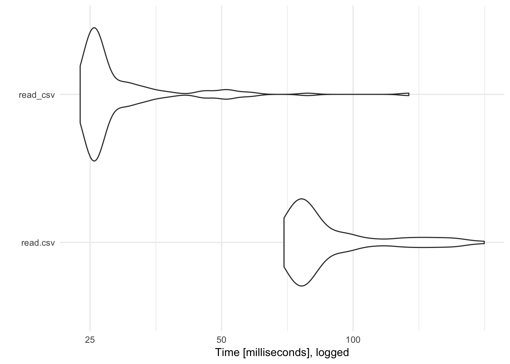
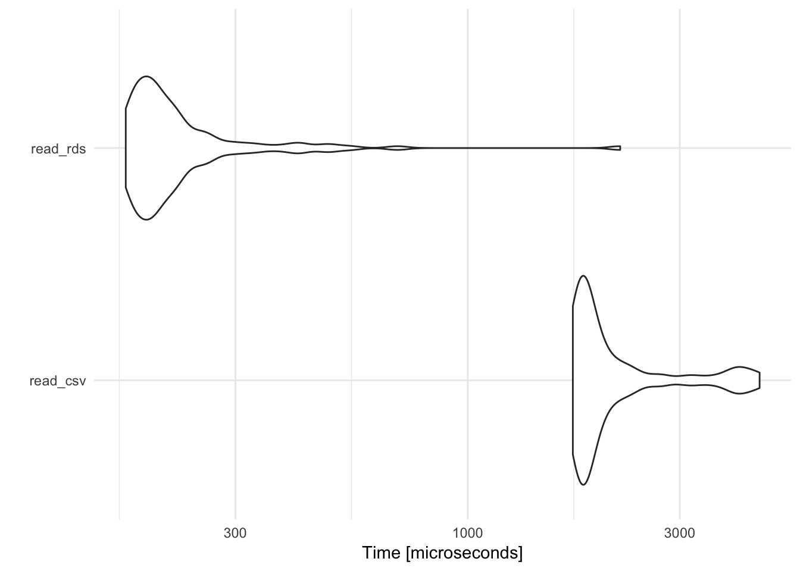

Importing data into R
library(tidyverse)
library(here)
theme_set(theme_minimal())
# set seed for reproducibility
set.seed(1234)readr vs. base R
One of the main advantages of readr functions over base R functions is that they are typically much faster. For example, let’s import a randomly generated CSV file with 50,000 rows and ncol(data_small) columns. How long does it take read.csv() to import this file vs. readr::read_csv()? To assess the differences, we use the microbenchmark to run each function 100 times and compare the distributions of the time it takes to complete the data import:
library(microbenchmark)
results_small <- microbenchmark(
read.csv = read.csv(here("data", "sim-data-small.csv")),
read_csv = read_csv(here("data", "sim-data-small.csv"))
)autoplot(results_small) +
scale_y_log10(breaks = c(25, 50, 100)) +
labs(y = "Time [milliseconds], logged")
read_csv() is over 5 times faster than read.csv(). Of course with relatively small data files, this isn’t a large difference in absolute terms (a difference of 100 milliseconds is only .1 second). However, as the data file increases in size the performance savings will be much larger. Consider the same test with a CSV file with 5,000,000 rows:
library(microbenchmark)
results_large <- microbenchmark(
read.csv = read.csv(here("data", "sim-data-large.csv")),
read_csv = read_csv(here("data", "sim-data-large.csv"))
)autoplot(results_large) +
scale_y_log10(breaks = c(2.5, 5, 10, 20)) +
labs(y = "Time [seconds], logged")
Here read_csv() is far superior to read.csv().
Alternative file formats
CSV files, while common, are not the only type of data storage format you will encounter in the wild. Here is a quick primer on other file formats you may encounter and how to import/export them using R. We’ll use the challenge dataset in readr to demonstrate some of these formats.
challenge <- read_csv(
readr_example("challenge.csv"),
col_types = cols(
x = col_double(),
y = col_date()
)
)
challenge## # A tibble: 2,000 x 2
## x y
## <dbl> <date>
## 1 404 NA
## 2 4172 NA
## 3 3004 NA
## 4 787 NA
## 5 37 NA
## 6 2332 NA
## 7 2489 NA
## 8 1449 NA
## 9 3665 NA
## 10 3863 NA
## # ... with 1,990 more rowsRDS
RDS is a custom binary format used exclusively by R to store data objects.
# write to csv
write_csv(challenge, here("data", "challenge.csv"))
# write to/read from rds
write_rds(challenge, here("data", "challenge.csv"))
read_rds(here("data", "challenge.csv"))## # A tibble: 2,000 x 2
## x y
## <dbl> <date>
## 1 404 NA
## 2 4172 NA
## 3 3004 NA
## 4 787 NA
## 5 37 NA
## 6 2332 NA
## 7 2489 NA
## 8 1449 NA
## 9 3665 NA
## 10 3863 NA
## # … with 1,990 more rows# compare file size
file.info(here("data", "challenge.rds"))$size %>%
utils:::format.object_size("auto")## [1] "31.9 Kb"file.info(here("data", "challenge.csv"))$size %>%
utils:::format.object_size("auto")## [1] "31.9 Kb"# compare read speeds
microbenchmark(
read_csv = read_csv(
readr_example("challenge.csv"),
col_types = cols(
x = col_double(),
y = col_date()
)
),
read_rds = read_rds(here("data", "challenge.rds"))
) %>%
autoplot +
labs(y = "Time [microseconds], logged")
By default, write_rds() does not compress the .rds file; use the compress argument to implement one of several different compression algorithms. read_rds() is noticably faster than read_csv(), and also has the benefit of preserving column types. The downside is that RDS is only implemented by R; it is not used by any other program so if you need to import/export data files into other languages like Python (or open in Excel), RDS is not a good storage format.
feather
The feather package implements a binary file format that is cross-compatible with many different programming languages:
library(feather)
write_feather(challenge, here("data", "challenge.feather"))
read_feather(here("data", "challenge.feather"))## # A tibble: 2,000 x 2
## x y
## <dbl> <date>
## 1 404 NA
## 2 4172 NA
## 3 3004 NA
## 4 787 NA
## 5 37 NA
## 6 2332 NA
## 7 2489 NA
## 8 1449 NA
## 9 3665 NA
## 10 3863 NA
## # … with 1,990 more rows# compare read speeds
microbenchmark(
read_csv = read_csv(
readr_example("challenge.csv"),
col_types = cols(
x = col_double(),
y = col_date()
)
),
read_rds = read_rds(here("data", "challenge.rds")),
read_feather = read_feather(here("data", "challenge.feather"))
) %>%
autoplot +
scale_y_continuous(labels = scales::comma) +
labs(y = "Time [microseconds], logged")
feather is generally faster than RDS and read_csv().1 Furthermore, it has native support for Python, R, and Julia., so if you develop an analytics pipeline that switches between R and Python, you can import/export data files in .feather without any loss of information.
readxl
readxl enables you to read (but not write) Excel files (.xls and xlsx).2
library(readxl)
xlsx_example <- readxl_example("datasets.xlsx")
read_excel(xlsx_example)## # A tibble: 150 x 5
## Sepal.Length Sepal.Width Petal.Length Petal.Width Species
## <dbl> <dbl> <dbl> <dbl> <chr>
## 1 5.1 3.5 1.4 0.2 setosa
## 2 4.9 3.0 1.4 0.2 setosa
## 3 4.7 3.2 1.3 0.2 setosa
## 4 4.6 3.1 1.5 0.2 setosa
## 5 5.0 3.6 1.4 0.2 setosa
## 6 5.4 3.9 1.7 0.4 setosa
## 7 4.6 3.4 1.4 0.3 setosa
## 8 5.0 3.4 1.5 0.2 setosa
## 9 4.4 2.9 1.4 0.2 setosa
## 10 4.9 3.1 1.5 0.1 setosa
## # ... with 140 more rowsThe nice thing about readxl is that you can access multiple sheets from the workbook. List the sheet names with excel_sheets():
excel_sheets(xlsx_example)## [1] "iris" "mtcars" "chickwts" "quakes"Then specify which worksheet you want by name or number:
read_excel(xlsx_example, sheet = "chickwts")## # A tibble: 71 x 2
## weight feed
## <dbl> <chr>
## 1 179 horsebean
## 2 160 horsebean
## 3 136 horsebean
## 4 227 horsebean
## 5 217 horsebean
## 6 168 horsebean
## 7 108 horsebean
## 8 124 horsebean
## 9 143 horsebean
## 10 140 horsebean
## # ... with 61 more rowsread_excel(xlsx_example, sheet = 2)## # A tibble: 32 x 11
## mpg cyl disp hp drat wt qsec vs am gear carb
## <dbl> <dbl> <dbl> <dbl> <dbl> <dbl> <dbl> <dbl> <dbl> <dbl> <dbl>
## 1 21.0 6 160.0 110 3.90 2.620 16.46 0 1 4 4
## 2 21.0 6 160.0 110 3.90 2.875 17.02 0 1 4 4
## 3 22.8 4 108.0 93 3.85 2.320 18.61 1 1 4 1
## 4 21.4 6 258.0 110 3.08 3.215 19.44 1 0 3 1
## 5 18.7 8 360.0 175 3.15 3.440 17.02 0 0 3 2
## 6 18.1 6 225.0 105 2.76 3.460 20.22 1 0 3 1
## 7 14.3 8 360.0 245 3.21 3.570 15.84 0 0 3 4
## 8 24.4 4 146.7 62 3.69 3.190 20.00 1 0 4 2
## 9 22.8 4 140.8 95 3.92 3.150 22.90 1 0 4 2
## 10 19.2 6 167.6 123 3.92 3.440 18.30 1 0 4 4
## # ... with 22 more rowshaven
haven allows you to read and write data from other statistical packages such as SAS (.sas7bdat + .sas7bcat), SPSS (.sav + .por), and Stata (.dta).
library(haven)
# SAS
read_sas(system.file("examples", "iris.sas7bdat", package = "haven"))## # A tibble: 150 x 5
## Sepal_Length Sepal_Width Petal_Length Petal_Width Species
## <dbl> <dbl> <dbl> <dbl> <chr>
## 1 5.1 3.5 1.4 0.2 setosa
## 2 4.9 3 1.4 0.2 setosa
## 3 4.7 3.2 1.3 0.2 setosa
## 4 4.6 3.1 1.5 0.2 setosa
## 5 5 3.6 1.4 0.2 setosa
## 6 5.4 3.9 1.7 0.4 setosa
## 7 4.6 3.4 1.4 0.3 setosa
## 8 5 3.4 1.5 0.2 setosa
## 9 4.4 2.9 1.4 0.2 setosa
## 10 4.9 3.1 1.5 0.1 setosa
## # … with 140 more rowswrite_sas(mtcars, here("data", "mtcars.sas7bdat"))
# SPSS
read_sav(system.file("examples", "iris.sav", package = "haven"))## # A tibble: 150 x 5
## Sepal.Length Sepal.Width Petal.Length Petal.Width Species
## <dbl> <dbl> <dbl> <dbl> <dbl+lbl>
## 1 5.1 3.5 1.4 0.2 1 [setosa]
## 2 4.9 3 1.4 0.2 1 [setosa]
## 3 4.7 3.2 1.3 0.2 1 [setosa]
## 4 4.6 3.1 1.5 0.2 1 [setosa]
## 5 5 3.6 1.4 0.2 1 [setosa]
## 6 5.4 3.9 1.7 0.4 1 [setosa]
## 7 4.6 3.4 1.4 0.3 1 [setosa]
## 8 5 3.4 1.5 0.2 1 [setosa]
## 9 4.4 2.9 1.4 0.2 1 [setosa]
## 10 4.9 3.1 1.5 0.1 1 [setosa]
## # … with 140 more rowswrite_sav(mtcars, here("data", "mtcars.sav"))
# Stata
read_dta(system.file("examples", "iris.dta", package = "haven"))## # A tibble: 150 x 5
## sepallength sepalwidth petallength petalwidth species
## <dbl> <dbl> <dbl> <dbl> <chr>
## 1 5.10 3.5 1.40 0.200 setosa
## 2 4.90 3 1.40 0.200 setosa
## 3 4.70 3.20 1.30 0.200 setosa
## 4 4.60 3.10 1.5 0.200 setosa
## 5 5 3.60 1.40 0.200 setosa
## 6 5.40 3.90 1.70 0.400 setosa
## 7 4.60 3.40 1.40 0.300 setosa
## 8 5 3.40 1.5 0.200 setosa
## 9 4.40 2.90 1.40 0.200 setosa
## 10 4.90 3.10 1.5 0.100 setosa
## # … with 140 more rowswrite_dta(mtcars, here("data", "mtcars.dta"))That said, if you can obtain your data file in a plain .csv or .tsv file format, I strongly recommend it. SAS, SPSS, and Stata files represent labeled data and missing values differently from R. haven attempts to bridge the gap and preserve as much information as possible, but I frequently find myself stripping out all the label information and rebuilding it using dplyr functions and the codebook for the data file.
Need to import a SAS, SPSS, or Stata data file? Read the documentation to learn how to best handle value labels and missing values.
Session Info
devtools::session_info()## ─ Session info ──────────────────────────────────────────────────────────
## setting value
## version R version 3.5.2 (2018-12-20)
## os macOS Mojave 10.14.3
## system x86_64, darwin15.6.0
## ui X11
## language (EN)
## collate en_US.UTF-8
## ctype en_US.UTF-8
## tz America/Chicago
## date 2019-03-02
##
## ─ Packages ──────────────────────────────────────────────────────────────
## package * version date lib
## assertthat 0.2.0 2017-04-11 [2]
## backports 1.1.3 2018-12-14 [2]
## base64enc 0.1-3 2015-07-28 [2]
## broom 0.5.1 2018-12-05 [2]
## callr 3.1.1 2018-12-21 [2]
## cellranger 1.1.0 2016-07-27 [2]
## cli 1.0.1 2018-09-25 [1]
## codetools 0.2-16 2018-12-24 [2]
## colorspace 1.4-0 2019-01-13 [2]
## crayon 1.3.4 2017-09-16 [2]
## desc 1.2.0 2018-05-01 [2]
## devtools 2.0.1 2018-10-26 [1]
## digest 0.6.18 2018-10-10 [1]
## dplyr * 0.8.0.1 2019-02-15 [1]
## ellipsis 0.1.0 2019-02-19 [2]
## evaluate 0.13 2019-02-12 [2]
## fansi 0.4.0 2018-10-05 [2]
## feather * 0.3.2 2019-01-07 [2]
## forcats * 0.4.0 2019-02-17 [2]
## fs 1.2.6 2018-08-23 [1]
## generics 0.0.2 2018-11-29 [1]
## ggplot2 * 3.1.0 2018-10-25 [1]
## glue 1.3.0 2018-07-17 [2]
## gtable 0.2.0 2016-02-26 [2]
## haven * 2.1.0 2019-02-19 [2]
## here * 0.1 2017-05-28 [2]
## hms 0.4.2 2018-03-10 [2]
## htmltools 0.3.6 2017-04-28 [1]
## httr 1.4.0 2018-12-11 [2]
## jsonlite 1.6 2018-12-07 [2]
## knitr 1.21 2018-12-10 [2]
## labeling 0.3 2014-08-23 [2]
## lattice 0.20-38 2018-11-04 [2]
## lazyeval 0.2.1 2017-10-29 [2]
## lubridate 1.7.4 2018-04-11 [2]
## magrittr 1.5 2014-11-22 [2]
## memoise 1.1.0 2017-04-21 [2]
## microbenchmark * 1.4-6 2018-10-18 [2]
## modelr 0.1.4 2019-02-18 [2]
## munsell 0.5.0 2018-06-12 [2]
## nlme 3.1-137 2018-04-07 [2]
## pillar 1.3.1 2018-12-15 [2]
## pkgbuild 1.0.2 2018-10-16 [1]
## pkgconfig 2.0.2 2018-08-16 [2]
## pkgload 1.0.2 2018-10-29 [1]
## plyr 1.8.4 2016-06-08 [2]
## prettyunits 1.0.2 2015-07-13 [2]
## processx 3.2.1 2018-12-05 [2]
## ps 1.3.0 2018-12-21 [2]
## purrr * 0.3.0 2019-01-27 [2]
## R6 2.4.0 2019-02-14 [1]
## Rcpp 1.0.0 2018-11-07 [1]
## readr * 1.3.1 2018-12-21 [2]
## readxl * 1.3.0 2019-02-15 [2]
## remotes 2.0.2 2018-10-30 [1]
## rlang 0.3.1 2019-01-08 [1]
## rmarkdown 1.11 2018-12-08 [2]
## rprojroot 1.3-2 2018-01-03 [2]
## rstudioapi 0.9.0 2019-01-09 [1]
## rvest 0.3.2 2016-06-17 [2]
## scales 1.0.0 2018-08-09 [1]
## sessioninfo 1.1.1 2018-11-05 [1]
## stringi 1.3.1 2019-02-13 [1]
## stringr * 1.4.0 2019-02-10 [1]
## testthat 2.0.1 2018-10-13 [2]
## tibble * 2.0.1 2019-01-12 [2]
## tidyr * 0.8.2.9000 2019-02-11 [1]
## tidyselect 0.2.5 2018-10-11 [1]
## tidyverse * 1.2.1 2017-11-14 [2]
## usethis 1.4.0 2018-08-14 [1]
## utf8 1.1.4 2018-05-24 [2]
## withr 2.1.2 2018-03-15 [2]
## xfun 0.5 2019-02-20 [1]
## xml2 1.2.0 2018-01-24 [2]
## yaml 2.2.0 2018-07-25 [2]
## source
## CRAN (R 3.5.0)
## CRAN (R 3.5.0)
## CRAN (R 3.5.0)
## CRAN (R 3.5.0)
## CRAN (R 3.5.0)
## CRAN (R 3.5.0)
## CRAN (R 3.5.0)
## CRAN (R 3.5.2)
## CRAN (R 3.5.2)
## CRAN (R 3.5.0)
## CRAN (R 3.5.0)
## CRAN (R 3.5.1)
## CRAN (R 3.5.0)
## CRAN (R 3.5.2)
## CRAN (R 3.5.2)
## CRAN (R 3.5.2)
## CRAN (R 3.5.0)
## CRAN (R 3.5.2)
## CRAN (R 3.5.2)
## CRAN (R 3.5.0)
## CRAN (R 3.5.0)
## CRAN (R 3.5.0)
## CRAN (R 3.5.0)
## CRAN (R 3.5.0)
## CRAN (R 3.5.2)
## CRAN (R 3.5.0)
## CRAN (R 3.5.0)
## CRAN (R 3.5.0)
## CRAN (R 3.5.0)
## CRAN (R 3.5.0)
## CRAN (R 3.5.1)
## CRAN (R 3.5.0)
## CRAN (R 3.5.2)
## CRAN (R 3.5.0)
## CRAN (R 3.5.0)
## CRAN (R 3.5.0)
## CRAN (R 3.5.0)
## CRAN (R 3.5.0)
## CRAN (R 3.5.2)
## CRAN (R 3.5.0)
## CRAN (R 3.5.2)
## CRAN (R 3.5.0)
## CRAN (R 3.5.0)
## CRAN (R 3.5.1)
## CRAN (R 3.5.0)
## CRAN (R 3.5.0)
## CRAN (R 3.5.0)
## CRAN (R 3.5.0)
## CRAN (R 3.5.0)
## CRAN (R 3.5.2)
## CRAN (R 3.5.2)
## CRAN (R 3.5.0)
## CRAN (R 3.5.0)
## CRAN (R 3.5.2)
## CRAN (R 3.5.0)
## CRAN (R 3.5.2)
## CRAN (R 3.5.0)
## CRAN (R 3.5.0)
## CRAN (R 3.5.2)
## CRAN (R 3.5.0)
## CRAN (R 3.5.0)
## CRAN (R 3.5.0)
## CRAN (R 3.5.2)
## CRAN (R 3.5.2)
## CRAN (R 3.5.0)
## CRAN (R 3.5.2)
## Github (tidyverse/tidyr@0b27690)
## CRAN (R 3.5.0)
## CRAN (R 3.5.0)
## CRAN (R 3.5.0)
## CRAN (R 3.5.0)
## CRAN (R 3.5.0)
## CRAN (R 3.5.2)
## CRAN (R 3.5.0)
## CRAN (R 3.5.0)
##
## [1] /Users/soltoffbc/Library/R/3.5/library
## [2] /Library/Frameworks/R.framework/Versions/3.5/Resources/libraryThis work is licensed under the CC BY-NC 4.0 Creative Commons License.